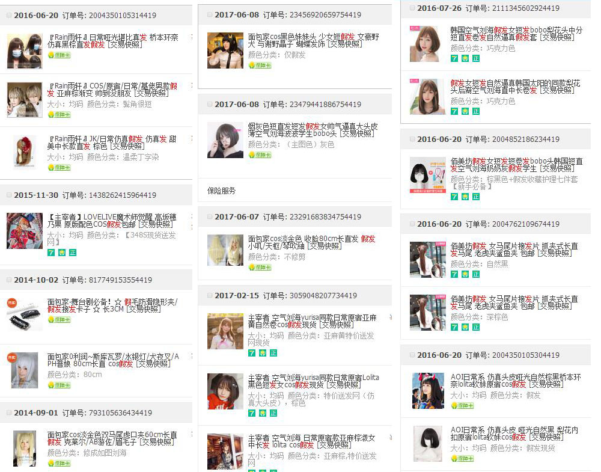

正文:
怎么就没有写干货的…
==========================================
容我先看着房间里一堆假发心塞一下。
==========================================
目前收的假发不算丢掉的还有二十多顶
日常的占七成。剩下的是cos用的毛
四页中的一页。
（问：为什么买这么多？ -答： 无可奉告！）
随着假发工艺的变化，现在已经能做出仿真度很高的假发了。
所以我来说一下女装怎么选择假发。
=========================================
1，带头皮的仿真假发（必须）
（图片源于X宝）
不要选择cos用的假发不要选择cos用的假发不要选择cos用的假发。
选购假发一定先加上 日常 这个关键词！
有顶心头皮设计的假发看起来是非常自然的，而且这种假发为了仿真度发量会偏少，带起来比较薄。和妹子的真发较为接近
2，发型的选择
这个其实看脸型来着
以下是参考公式
脸长的选齐刘海 / 脸短的露点额头
脸宽的选收脸的 / 脸小的你随意。
以下是禁忌
鼻子长的不能选择齐刘海 / 长得高的也别齐刘海了，单侧分或者留长发单马尾。挺好
双马尾只能短发加虎口夹（当然也可以选60cm左右的头发在下摆处分成两股，但是容易暴露假发。所以尽可能不要尝试假发双马尾日常。）
至于仔细到五官搭配的内容，可以参考知乎问答
至于日常追求M字以及觉得M字日常很好看的，请先治疗一下您的中二病daze。
PS：如果不会剪刘海，就选卖家修过的。或者直接选择造型款。不过一般都是会留长一点，还是需要自己修剪的，找个时间自己学一下怎么修吧。
3，长度
最长选到胸前为佳，长了不好打理。戴久了也容易头痛
30cm以下短发
40cm披肩
50cm到胸前
60cm到腰部
（非精确数值，可能有偏差）
60基本上就是极限了，不要再高了，60cm都要一个妹子留个几年了。
再高一来不好打理，二来也太容易吸引目光。
至于直发还是卷发。
随便找了一张图给你们参考
不过作为一名短发党，表示短直赛高！
4，颜色
日常的不招人注目为优先考虑
主要是黑色 / 各种颜色的棕色 / 淡金 / 浅灰色
我推荐选择 棕色 为日常款
至于棕色怎么选，这个水就比较深了。这里面各种千奇百怪的命名，什么亚麻啦、巧克力色啦、棕黑啦、深棕啦、浅棕啦、焦糖棕啦，非常非常多的棕。
我个人推荐 棕黑 / 深棕 就是看起来非常接近黑色，但是不是纯黑的棕黑色
浪一点也可以选择巧克力棕w
问：为什么不选择黑色
答：大家可能会觉得黑色是最适合的，其实不是的，假发多是染色制成的，假发的黑色是非常不自然的纯黑。这种黑色如果在正常妹子身上其实是很难找到的。原因是国人的体质问题，以及大多数妹子小时候也不会特别注意头发护理。所以多数女生（注意：多数）头发的颜色都不是纯黑色的，都会偏一点棕色，部分妹子也因为营养不良会导致头发偏棕色。而且头发越长，就越接近棕色。
而且染成棕色的也大有人在。所以棕色作为一个日常发色比黑色合适的多。
至于究竟选择哪种棕色，全凭各位小姐姐喜欢w
至于淡金和浅灰。主要是染这两个发色的妹子挺常见的。街上经常能看到。
至于想选个粉毛啊，绿毛啊，蓝毛啊，白毛啊，彩毛啊什么的。
emmmmmmmmmmmmm
可以啊，你喜欢就好，和我无关呀。（摊手）
【注意事项！】
1，不要用有汗水的手摸假发！
2，所有的包装一个都不许丢！
正常的应该有：盒子，假发袋，网状假发保护套，防压用卡纸圈，以及内部纸团。
听清楚！一个都不许丢！用完了晒干洗完，喷好护发素后，原封不动给我装回去！
3，不要用普通梳子梳头！一定要也只能修刘海！ 给我好好用钢齿梳！
（钢齿梳见底部拓展阅读3）
顺毛必须从下至上，遇到打结部分就重新由下往上梳。
4，有条件和时间不妨学一下编发，编个小三股辫还是很可爱的。（编法见尾巴）
5，至于卷发棒怎么用啥的，各位可以研究一下，自己烫一个空气刘海什么的（需要假发的材质为高温丝才可以烫）
PS：有条件还是自己留头发吧w。
虽然我很想有蓄个权游里囧的发型，但是果然我的头发还是留不住啊（碎碎念）
===============================================
拓展阅读
以上
===============================================
附上一个教程